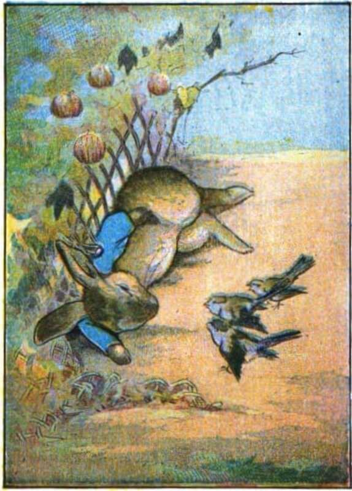
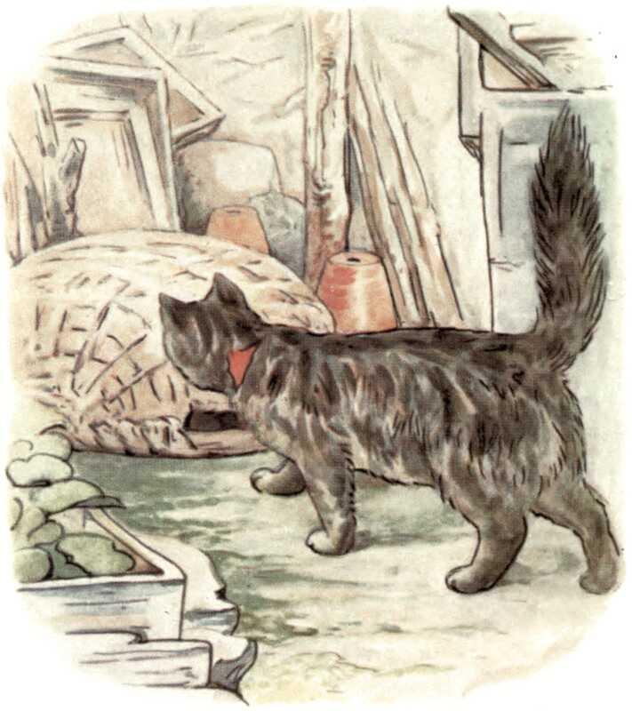
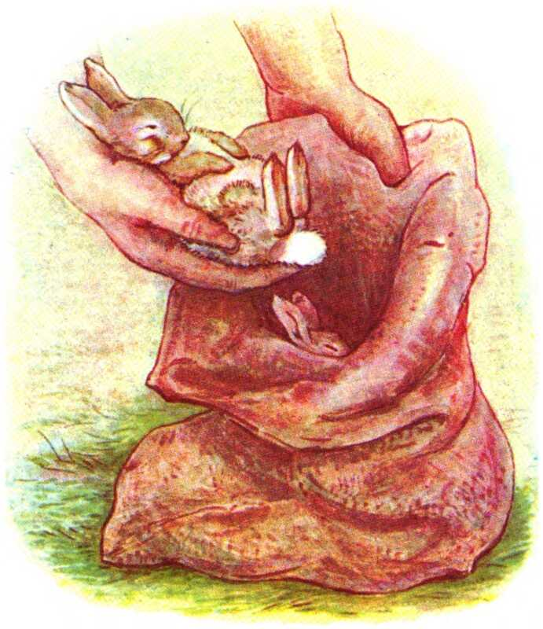
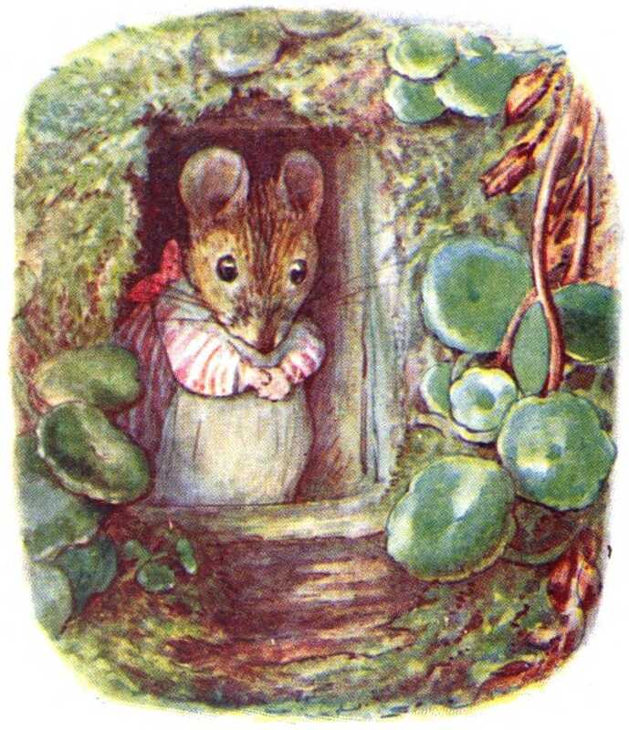

用小故事學英文：彼得兔故事集是什麼？
- 原書《Short Fiction》共 20 篇，這裡挑了角色互相連結的 5 篇
- 答案：前四篇是同一個兔子家族的故事，第五篇靠一隻林鼠接上（推論）
- 給英文初學者：每一頁都有中文說明和英文原句
- 作者與插畫：Beatrix Potter
Wiki 出處：sources、family-five-stories ｜ 氛圍依據：the-wood
故事線① Peter Rabbit② Benjamin Bunny③ Flopsy Bunnies④ Mr. Tod⑤ Mrs. Tittlemouse1 / 17
學完這份簡報，你可以
- 說出五篇故事各在講什麼（第 3–8 頁）
- 說出角色之間的關係：誰是一家人、誰長大了、每篇的危險在哪（第 9–11 頁）
- 用三句話回答「彼得兔故事集是什麼」（第 13 頁）
- 認得 5 個英文單字：cousin、naughty、sack、resourceful、oven（第 14 頁）
- 用兩組小測驗檢查自己：故事題和單字題（第 15–16 頁）
氛圍依據：fir-tree-rabbit-hole
故事線① Peter Rabbit② Benjamin Bunny③ Flopsy Bunnies④ Mr. Tod⑤ Mrs. Tittlemouse2 / 17
故事線：五篇的順序
- ① Peter 闖進花園，被追到鞋子都掉了 ｜ "He lost one of his shoes among the cabbages, and the other shoe amongst the potatoes."
- ② 表哥/表弟 Benjamin 帶 Peter 回花園拿衣服 ｜ "They went away hand in hand, and got upon the flat top of the wall at the bottom of the wood."
- ③ Benjamin 長大了，娶了 Flopsy ｜ "When Benjamin Bunny grew up, he married his Cousin Flopsy."
- ④ 兩個討人厭的角色出場：Tommy Brock 和 Mr. Tod ｜ "a story about two disagreeable people, called Tommy Brock and Mr. Tod."
- ⑤ 主角換成一隻非常愛乾淨的林鼠 ｜ "Mrs. Tittlemouse was a most terribly tidy particular little mouse"
Wiki 出處：peter-rabbit、benjamin-bunny、flopsy-bunnies、mr-tod、mrs-tittlemouse ｜ 氛圍依據：fir-tree-rabbit-hole
故事線① Peter Rabbit② Benjamin Bunny③ Flopsy Bunnies④ Mr. Tod⑤ Mrs. Tittlemouse3 / 17

① The Tale of Peter RabbitPeter 闖進花園
- 媽媽警告孩子：不准去 McGregor 的花園 ｜ "don't go into Mr. McGregor's garden."
- Peter 偏偏跑進去，先吃了萵苣和豆子 ｜ "First he ate some lettuces and some French beans"
- 被追時麻雀鼓勵他，他才扭身逃出，留下外套 ｜ "but Peter wriggled out just in time, leaving his jacket behind him."
- 外套和鞋子被拿去掛在稻草人身上 ｜ "Mr. McGregor hung up the little jacket and the shoes for a scarecrow to frighten the blackbirds."
Wiki 出處：peter-rabbit、lettuces、family-five-stories ｜ 氛圍依據：mr-mcgregors-garden
故事線① Peter Rabbit② Benjamin Bunny③ Flopsy Bunnies④ Mr. Tod⑤ Mrs. Tittlemouse4 / 17

② The Tale of Benjamin Bunny回花園拿衣服
- 表哥/表弟 Benjamin 看到 Peter 的衣服掛在稻草人身上（coat 就是第一篇的 jacket） ｜ "Peter's coat and shoes were plainly to be seen upon the scarecrow"
- Benjamin 說，進花園要爬下梨樹 ｜ "the proper way to get in is to climb down a pear-tree."
- 兩隻小兔子躲進籃子，貓坐在上面 ｜ "She sat there for five hours."
- Benjamin 的爸爸趕來，把貓關進溫室 ｜ "When old Mr. Bunny had driven the cat into the greenhouse, he locked the door."
Wiki 出處：benjamin-bunny ｜ 氛圍依據：mr-mcgregors-garden
故事線① Peter Rabbit② Benjamin Bunny③ Flopsy Bunnies④ Mr. Tod⑤ Mrs. Tittlemouse5 / 17

③ The Tale of the Flopsy Bunnies小兔子進了麻袋
- Benjamin 和 Flopsy 一家不太會存糧，但很快樂 ｜ "they were very improvident and cheerful."
- 孩子們吃了萵苣，在垃圾堆睡著 ｜ "they were overcome with slumber"
- Mr. McGregor 數到六隻，裝進麻袋（leetle 是 little 的口音拼法） ｜ "One, two, three, four! five! six leetle rabbits!"
- 林鼠 Thomasina 咬破麻袋救了他們 ｜ "But Mrs. Tittlemouse was a resourceful person."
Wiki 出處：improvident、flopsy-bunnies、resourceful ｜ 氛圍依據：mr-mcgregors-rubbish-heap
故事線① Peter Rabbit② Benjamin Bunny③ Flopsy Bunnies④ Mr. Tod⑤ Mrs. Tittlemouse6 / 17

④ The Tale of Mr. Tod救回被偷的孩子
- 兔子們很怕 Mr. Tod，半哩外就聞得到他 ｜ "they could smell him half a mile off."
- Benjamin 追 Tommy Brock 時遇到 Peter，向他求助 ｜ "Cousin Peter! Peter Rabbit, Peter Rabbit!"
- 孩子被關在 Mr. Tod 家的烤爐裡 ｜ "The young family were alive; shut up in the oven!"
- Peter 守門，Benjamin 進屋把孩子救出來 ｜ "Run in, Cousin Benjamin! Run in and get them! while I watch at the door."
Wiki 出處：mr-tod-character、cousin、mr-tod、family-five-stories ｜ 氛圍依據：bull-banks-house
故事線① Peter Rabbit② Benjamin Bunny③ Flopsy Bunnies④ Mr. Tod⑤ Mrs. Tittlemouse7 / 17

⑤ The Tale of Mrs. Tittlemouse林鼠的家
- 主角換成一隻林鼠 ｜ "Once upon a time there was a wood mouse, and her name was Mrs. Tittlemouse."
- 熊蜂不請自來，她開始生氣 ｜ "Mrs. Tittlemouse began to get cross."
- 訪客走後，家裡一團亂 ｜ "Never did I see such a mess"
- 她大掃除了兩週 ｜ "began a spring cleaning which lasted a fortnight."
Wiki 出處：mrs-tittlemouse ｜ 氛圍依據：mrs-tittlemouse-house
故事線① Peter Rabbit② Benjamin Bunny③ Flopsy Bunnies④ Mr. Tod⑤ Mrs. Tittlemouse8 / 17
讀完五篇才看得出來①：一個家族
- Peter 和 Benjamin 是 cousin（表或堂，原文沒說） ｜ "he had heard about cats from his cousin, little Benjamin Bunny."
- Peter 是 Benjamin 爸爸的 nephew（姪子/外甥） ｜ "Then he took out his nephew Peter."
- Benjamin 長大後娶了 Flopsy ｜ "When Benjamin Bunny grew up, he married his Cousin Flopsy."
- （推論）③ 救了孩子的林鼠，就是 ⑤ 的主角 ｜ "she was called Thomasina Tittlemouse, a wood mouse with a long tail."
Wiki 出處：family-five-stories、benjamin-bunny ｜ 氛圍依據：benjamin-family-rabbit-hole
故事線① Peter Rabbit② Benjamin Bunny③ Flopsy Bunnies④ Mr. Tod⑤ Mrs. Tittlemouse9 / 17

讀完五篇才看得出來②他們長大了
- Peter：① 小時候很調皮 ｜ "But Peter, who was very naughty"
- Peter：③ 長大後開了自己的苗圃 ｜ "Flopsy's brother, Peter Rabbit, who kept a nursery garden."
- Benjamin：② 小時候在花園裡很自在 ｜ "Benjamin, on the contrary, was perfectly at home"
- Benjamin：④（推論）長大後換他緊張，由 Peter 守門指揮 ｜ "Benjamin Bunny picked his way to the oven nervously"
Wiki 出處：family-five-stories ｜ 氛圍依據：benjamin-family-rabbit-hole
故事線① Peter Rabbit② Benjamin Bunny③ Flopsy Bunnies④ Mr. Tod⑤ Mrs. Tittlemouse10 / 17
讀完五篇才看得出來③：危險與脫身
- （推論）每篇都有一個麻煩，脫身方式都不同。① 麻雀鼓勵後，Peter 扭身逃出 ｜ "but Peter wriggled out just in time"
- ② 靠 Benjamin 的爸爸跳下來趕走貓 ｜ "He took a tremendous jump off the top of the wall on to the top of the cat"
- ③ 靠足智多謀的林鼠咬破麻袋 ｜ "But Mrs. Tittlemouse was a resourceful person."
- ④ 靠長大的 Peter 和 Benjamin ｜ "while I watch at the door."
- ⑤ 麻煩換成家被弄得一團亂，最後靠大掃除收拾 ｜ "Never did I see such a mess"
Wiki 出處：family-five-stories、benjamin-bunny、mrs-tittlemouse ｜ 氛圍依據：the-wood
故事線① Peter Rabbit② Benjamin Bunny③ Flopsy Bunnies④ Mr. Tod⑤ Mrs. Tittlemouse11 / 17
讀完故事再回頭看：這個 Wiki 做了什麼
- 把 5 篇原文拆成互相連結的頁：故事 5 頁、角色 14 頁、地點 9 頁、單字 40 頁
- 同一個角色出現在好幾篇，都連到同一頁，例如 Peter 出現在 4 篇
- 單字頁把不同篇的例句放在一起，例如 cousin 有 4 篇的例句
- 每一句英文都標出原文段落，可以回去讀整段
- 五篇合起來的答案存成一頁整合頁，這份簡報就是用它做的
Wiki 出處：index、peter、cousin、sources、family-five-stories ｜ 氛圍依據：fir-tree-rabbit-hole
故事線① Peter Rabbit② Benjamin Bunny③ Flopsy Bunnies④ Mr. Tod⑤ Mrs. Tittlemouse12 / 17
總結：彼得兔故事集是什麼？
- ① 一開始，調皮的 Peter 闖進花園 ｜ "But Peter, who was very naughty"
- ③ 後來，Benjamin 長大娶了 Flopsy，有了孩子 ｜ "When Benjamin Bunny grew up, he married his Cousin Flopsy."
- ④ 長大的 Peter 和 Benjamin 一起救回孩子，三代住在一起 ｜ "He lived with his son Benjamin Bunny and his daughter-in-law Flopsy"
- ⑤（推論）在 ③ 救過小兔子的林鼠，有了自己的故事 ｜ "Once upon a time there was a wood mouse, and her name was Mrs. Tittlemouse."
- 所以：前四篇是一個兔子家族長大的故事，第五篇靠一隻林鼠接上（推論） ｜ "she was called Thomasina Tittlemouse, a wood mouse with a long tail."
Wiki 出處：family-five-stories ｜ 氛圍依據：benjamin-family-rabbit-hole
故事線① Peter Rabbit② Benjamin Bunny③ Flopsy Bunnies④ Mr. Tod⑤ Mrs. Tittlemouse13 / 17
單字複習
- cousin 表（堂）兄弟姊妹："he married his Cousin Flopsy."
- naughty 調皮的："But Peter, who was very naughty"
- sack 麻袋："Mr. McGregor tied up the sack and left it on the wall."
- resourceful 足智多謀的："But Mrs. Tittlemouse was a resourceful person."
- oven 烤爐："The young family were alive; shut up in the oven!"
Wiki 出處：cousin、naughty、sack、resourceful、oven ｜ 氛圍依據：fir-tree-rabbit-hole
故事線① Peter Rabbit② Benjamin Bunny③ Flopsy Bunnies④ Mr. Tod⑤ Mrs. Tittlemouse14 / 17
小測驗①：故事
- Q1：哪兩篇的劇情是接著發生的？ → ① 和 ②（推論）：② 回花園拿 ① 被掛在稻草人上的衣服
- Q2：Benjamin 長大後娶了誰？ → 表姊/表妹 Flopsy
- Q3：誰咬破麻袋救了 Flopsy Bunnies？ → 林鼠 Thomasina Tittlemouse
- Q4：（推論題）第五篇靠誰接上家族故事？ → Thomasina Tittlemouse，推論兩篇是同一隻
Wiki 出處：family-five-stories ｜ 氛圍依據：fir-tree-rabbit-hole
故事線① Peter Rabbit② Benjamin Bunny③ Flopsy Bunnies④ Mr. Tod⑤ Mrs. Tittlemouse15 / 17
小測驗②：英文單字
- Q1：Peter 不聽話，「調皮的」英文是？ → naughty
- Q2：Peter 和 Benjamin 的關係，英文是？ → cousin
- Q3：小兔子被裝進「麻袋」，英文是？ → sack
- Q4：林鼠很「足智多謀」，英文是？ → resourceful
- Q5：小兔子被關進「烤爐」，英文是？ → oven
Wiki 出處：naughty、cousin、sack、resourceful、oven ｜ 氛圍依據：fir-tree-rabbit-hole
故事線① Peter Rabbit② Benjamin Bunny③ Flopsy Bunnies④ Mr. Tod⑤ Mrs. Tittlemouse16 / 17
出處
- 整合答案存在 Wiki 的 query 頁：family-five-stories
- 原文：Standard Ebooks 版 Beatrix Potter《Short Fiction》
- 作者兼插畫家 Beatrix Potter，1943 年過世，台灣著作權保護期已屆滿
- 標（推論）的是 Wiki 依原文推出來的，原文沒有直接寫
- 本簡報每一條文字都來自「英文經典讀本 Wiki」，並可追溯到原文段落
Wiki 出處：family-five-stories、sources ｜ 氛圍依據：fir-tree-rabbit-hole
故事線① Peter Rabbit② Benjamin Bunny③ Flopsy Bunnies④ Mr. Tod⑤ Mrs. Tittlemouse17 / 17